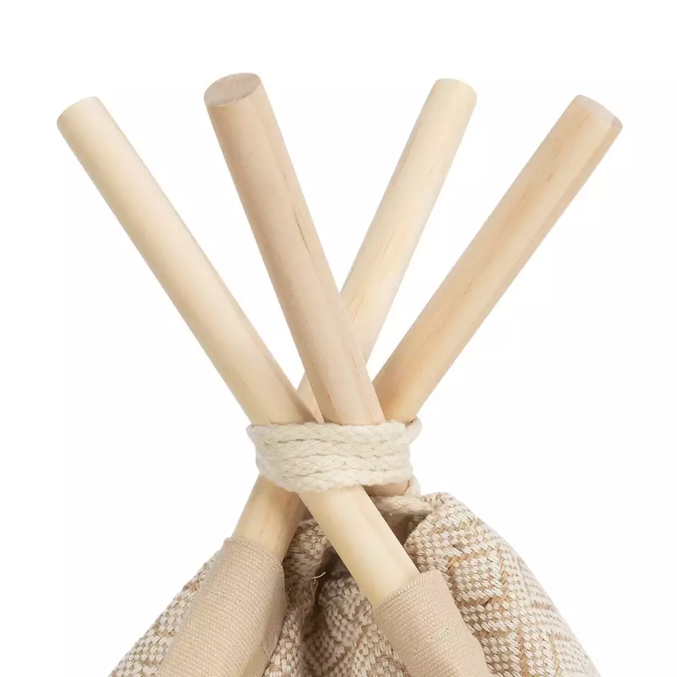
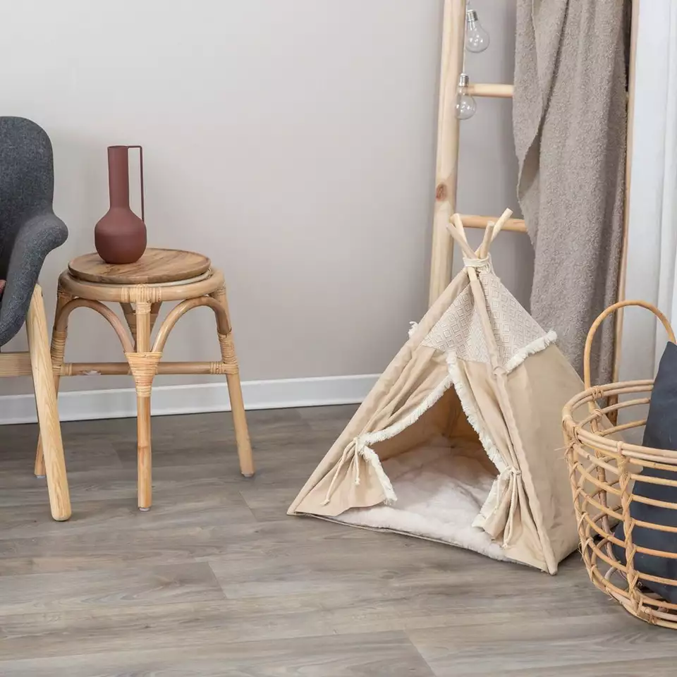

Mysig och rymlig kattbädd
Om produkten
Kattbädd Malmö är ett mysigt gömställe för katter. Det gulliga tältet är enkelt att fälla ihop och flytta efter behov.
Ett mysigt gömställe för katter. Beige och naturvita nyanser passar dessutom in i de flesta inredningar. Tältet är hopfällbart och har en vändbar kudde av mjukt polyester. Tältduken är av bomull och jute, med en halkfri botten. Tältduken kan tvättas för hand och kudden i maskin vid 40 grader på ett fintvättsprogram.
Pris
699 kr
Produktinformation
- Färg: Beige
- Material: Polyester, bomull, ek
- Totala mått: L 55 x B 55 x H 65 cm
- Lämplig för katter upp till 8 kg